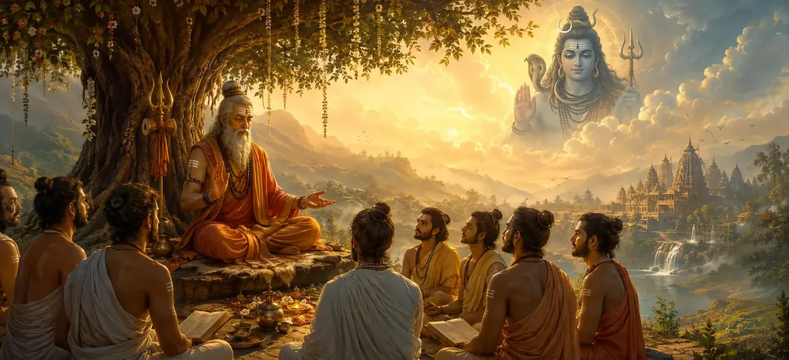

गुरु की महिमा
वायवीय संहिता का पचासवां अध्याय आध्यात्मिक विकास में गुरु की सर्वोच्च स्थिति, दिव्य प्रकृति और अपरिहार्य भूमिका पर एक पवित्र प्रवचन खोलता है।
ऋषि वायु बताते हैं कि सच्चा ज्ञान और मुक्ति एक प्रबुद्ध गुरु की कृपा और मार्गदर्शन के बिना प्राप्त नहीं की जा सकती, जो कोई और नहीं बल्कि मानव रूप में भगवान शिव हैं।
यह अध्याय गुरु और शिष्य के बीच मूलभूत संबंध स्थापित करता है।
अध्याय 50 की मुख्य बातें
सर्वोच्च कद
गुरु को शिव का स्वरूप मानना।
अँधेरा दूर करने वाला
गुरु किस प्रकार अज्ञान को दूर कर सत्य को प्रकट करते हैं।
अनुग्रह का संचरण
गुरु से शिष्य तक दिव्य ऊर्जा का प्रवाह।
समर्पित समर्पण
शिष्य का श्रद्धा एवं नम्रता का भाव।
आध्यात्मिक एंकर
गुरु सांसारिक अस्तित्व में स्थिर मार्गदर्शक के रूप में।
दीक्षा की तैयारी
शिष्य के औपचारिक अभिषेक के लिए मंच तैयार करना।
इस अध्याय में मुख्य विषय
गुरु की सच्ची परिभाषा और पहचान
ऋषि वायु बताते हैं कि 'गुरु' शब्द 'गु' (अंधकार) और 'रु' (दूर करने वाला) से बना है। इस प्रकार, गुरु वह है जो ज्ञान के प्रकाश से अज्ञान के अंधकार को दूर करता है।
इस मार्गदर्शक प्रकाश के बिना, मानवता सांसारिक भ्रम की भूलभुलैया में अंतहीन रूप से भटकती रहती है।
गुरु शिव की जीवंत अभिव्यक्ति के रूप में
पवित्र पाठ इस बात पर जोर देता है कि गुरु भगवान शिव से अलग नहीं है। जब शिव किसी भक्त के संचित गुणों से प्रसन्न होते हैं, तो वे उन्हें घर ले जाने के लिए गुरु का रूप धारण करते हैं।
गुरु की पूजा करना सीधे शिव की पूजा करना है।
अजनाना के अंधेरे को दूर करना
अज्ञान आत्मा को दुःख और पुनर्जन्म से बांधता है। गुरु साधक के आध्यात्मिक अंधेपन को ठीक करने के लिए ज्ञान की तलवार और दिव्य निर्देश के मरहम का उपयोग करते हैं।
इस मार्गदर्शन के तहत, वास्तविकता का वास्तविक स्वरूप स्पष्ट रूप से स्पष्ट हो जाता है।
मंत्र और अनुग्रह का पवित्र संचरण
ज्ञान केवल किताबों से प्राप्त नहीं होता; इसे एक योग्य गुरु से आध्यात्मिक प्रसारण (दीक्षा) के माध्यम से जागृत किया जाता है।
गुरु पवित्र मंत्र में जीवन का संचार करते हैं, जिससे यह संसार के सागर को पार करने के लिए एक प्रभावी नाव बन जाता है।
शिष्य का उचित दृष्टिकोण और भक्ति
एक सच्चा शिष्य गहन विनम्रता, अटूट विश्वास और अहंकार के बिना सेवा करने की तत्परता के साथ गुरु के पास जाता है।
यह ग्रहणशीलता गुरु की कृपा को साधक के हृदय में गहराई तक प्रवेश करने की अनुमति देती है।
आध्यात्मिक मार्गदर्शक की अपरिहार्य आवश्यकता
ऋषि वायु का निष्कर्ष है कि उच्च विद्वान व्यक्ति भी बिना नाविक के मृत्यु के सागर को पार नहीं कर सकते।
गुरु महत्वपूर्ण मार्गदर्शन प्रदान करता है जो मुक्ति के सर्वोच्च गंतव्य पर सुरक्षित आगमन सुनिश्चित करता है।
अध्याय 51 की ओर (शिष्य का अभिषेक)
अध्याय 50 में गुरु की सर्वोच्च महानता और आवश्यकता को स्थापित करने के बाद, ऋषि वायु अध्याय 51, 'शिष्य का अभिषेक' सुनाने की तैयारी करते हैं।
यह अगला अध्याय उन पवित्र अनुष्ठानों और प्रक्रियाओं का विवरण देगा जिनके द्वारा एक योग्य शिष्य को औपचारिक रूप से दीक्षा और अभिषेक दिया जाता है।
अध्याय 50 की मुख्य शिक्षाएँ
बुद्धि का प्रकाश
मार्गदर्शन के माध्यम से आंतरिक अंधकार को दूर करें।
शिव अवतार
गुरु भगवान शिव के प्रत्यक्ष प्रतिनिधि के रूप में।
पवित्र संचरण
दीक्षा के माध्यम से मंत्र शक्ति को जागृत करना।
विनम्र भक्ति
साधक का आवश्यक समर्पण।
संसार का स्टीयरमैन
पुनर्जन्म के सागर से पार आत्माओं का मार्गदर्शन करना।
दीक्षा प्रस्तावना
अध्याय 51 में शिष्यत्व के अनुष्ठानों की स्थापना।
आध्यात्मिक चिंतन
गुरु मानवीय सीमा और दिव्य अनंत के बीच का सेतु है, जो हृदय के मार्ग को तब तक रोशन करता है जब तक साधक को भगवान शिव के साथ अपनी शाश्वत एकता का एहसास नहीं हो जाता।
अध्याय 50 का संदेश जीना
शिव पुराण के पवित्र ज्ञान को संरक्षित करने वाले आध्यात्मिक शिक्षकों और परंपराओं के प्रति गहरी श्रद्धा पैदा करें।
सीखने के लिए उत्सुक एक समर्पित छात्र की विनम्रता के साथ अपनी दैनिक आध्यात्मिक प्रथाओं को अपनाएँ।
पहचानें कि जीवन का प्रत्येक वास्तविक पाठ आपकी चेतना को जागृत करने के लिए परमात्मा द्वारा भेजा गया मार्गदर्शन का एक रूप है।
प्रमुख आध्यात्मिक अवधारणाएँ
आध्यात्मिक गुरु का पूर्ण सिद्धांत.
आध्यात्मिक अंधकार और अज्ञान का विनाश.
गुरु भगवान शिव का साकार रूप है।
शिष्य की भक्ति और आस्था.
आध्यात्मिक दीक्षा और अनुग्रह प्रदान करना।
नश्वर अस्तित्व के सागर को सुरक्षित रूप से पार करना।
अध्याय सारांश
वायवीय संहिता अध्याय 50 गुरु की महानता की खोज करता है, गुरु को भगवान शिव के जीवित अवतार और अज्ञानता के सर्वोच्च निवारणकर्ता के रूप में परिभाषित करता है। अनुग्रह के महत्वपूर्ण संचरण और शिष्य के आवश्यक रवैये का विवरण देते हुए, यह अध्याय अध्याय 51, 'शिष्य का अभिषेक' के लिए आधार तैयार करता है।
अक्सर पूछे जाने वाले प्रश्न
1. वायवीय संहिता अध्याय 50 का मुख्य विषय क्या है?
अध्याय 50 आध्यात्मिक अनुभूति में गुरु के सर्वोच्च कद और अपरिहार्य भूमिका पर केंद्रित है, जिसमें बताया गया है कि आध्यात्मिक गुरु के माध्यम से दिव्य कृपा कैसे प्रसारित होती है।
2. वायवीय संहिता की शिक्षाओं में गुरु को किस प्रकार माना जाता है?
गुरु को न केवल एक मानव शिक्षक के रूप में माना जाता है, बल्कि स्वयं भगवान शिव के जीवित अवतार के रूप में भी माना जाता है, जिनकी कृपा से अज्ञान का अंधकार दूर हो जाता है।
3. इस अध्याय में गुरु की महिमा का उपदेश कौन करता है?
ऋषि वायु ने इकट्ठे हुए संतों को गुरु तत्व के बारे में गहन ज्ञान समझाया।
4. अध्याय 50 के बाद नेविगेशन के लिए अगला अध्याय कौन सा है?
नेविगेशन के लिए अगले अध्याय का शीर्षक 'शिष्य का अभिषेक' है।
"गुरु ज्ञान का सूर्य है जो अज्ञानता की रात को नष्ट कर देता है, दयालु मार्गदर्शक है जो समर्पित आत्मा को सीधे भगवान शिव के परम आलिंगन में ले जाता है।"
वायवीय संहिता के माध्यम से जारी रखें
अध्याय 50 गुरु की महानता का समापन करता है। शिष्य का अभिषेक जारी रखें.